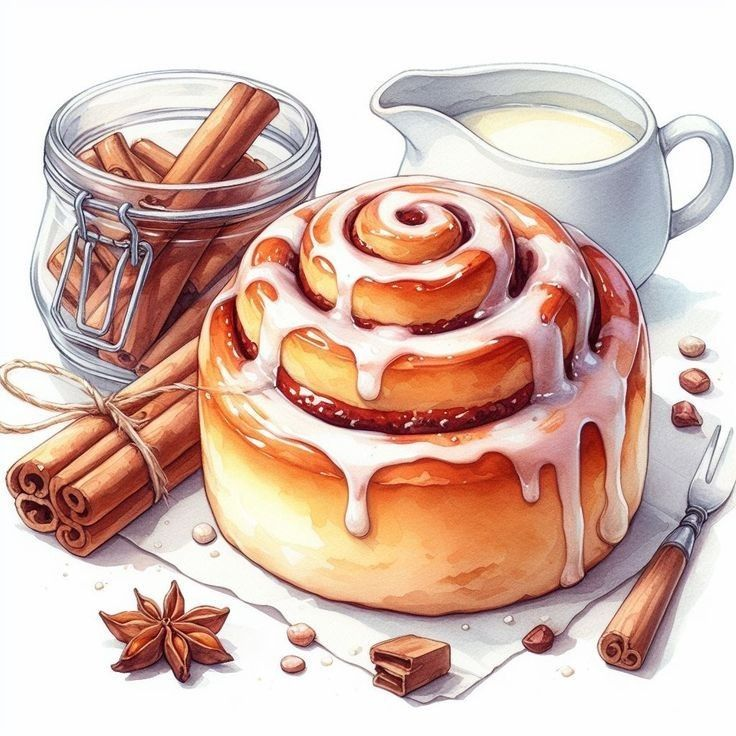
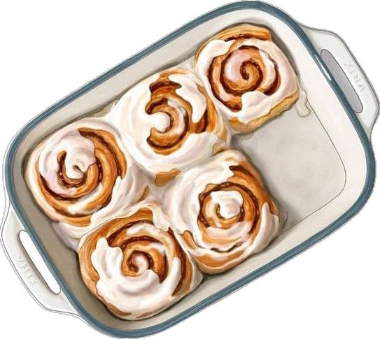
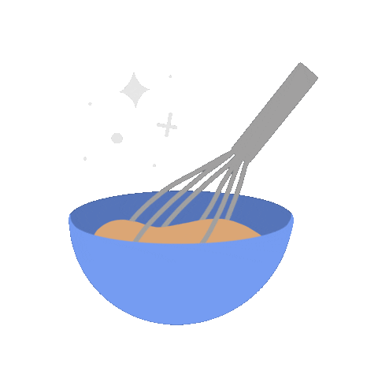
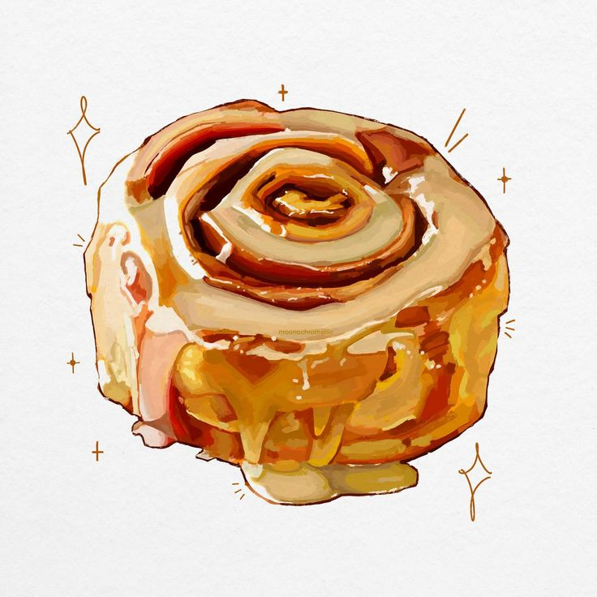
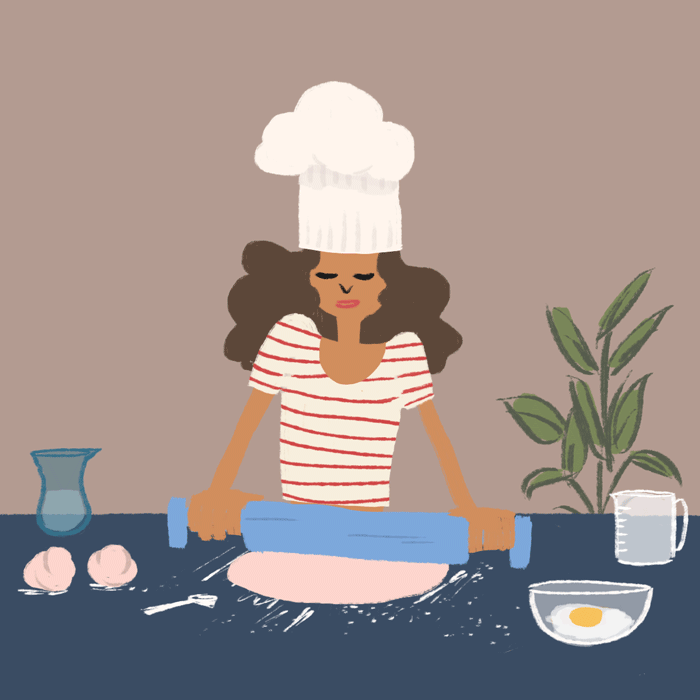

Ingredients
4 cups all-purpose flour
1 cup warm milk
1/3 cup melted butter
2 and 1/4 tsp active dry yeast
1/2 tsp salt
1/3 cup sugar
Soft, fluffy, and irresistibly sweet

4 cups all-purpose flour
1 cup warm milk
1/3 cup melted butter
2 and 1/4 tsp active dry yeast
1/2 tsp salt
1/3 cup sugar

for a rich blend of cinnamon, brown sugar, and melted butter
creates that classic swirl of sweetness.
1/2 cup softened butter
3/4 cup brown sugar
2 tsp ground cinnamon

mix warm milk ,yeast & sugar. let it sit 5-10 mins until foamy.
add butter,egg,salt & flour ,Knead until smooth, rise 1 hour
roll out dough,spread butter , sprinkle cinnamon sugar
roll up , cut into 12 pieces , place in greases pan , rise 30-40 min
bake at 350°F (175°C) for 20-25 mins until golden brown
whisk glaze & drizzle over warm rolls

A smooth glaze made with powdered sugar, milk, and vanilla.
Drizzle generously over warm buns.You will need :
1 cup powdered sugar
2-3 tbsp milk
1/2 tsp vanilla extract

Use warm (not hot) milk for yeast.
Don’t rush the rising process.
For extra gooey buns, add a sprinkle of cream cheese to the filling.
Fresh cinnamon makes a big difference!
add cream cheese to the glaze for extra yum

Have questions or feedback? Reach out at:
📧 chibwen03@gmail.com